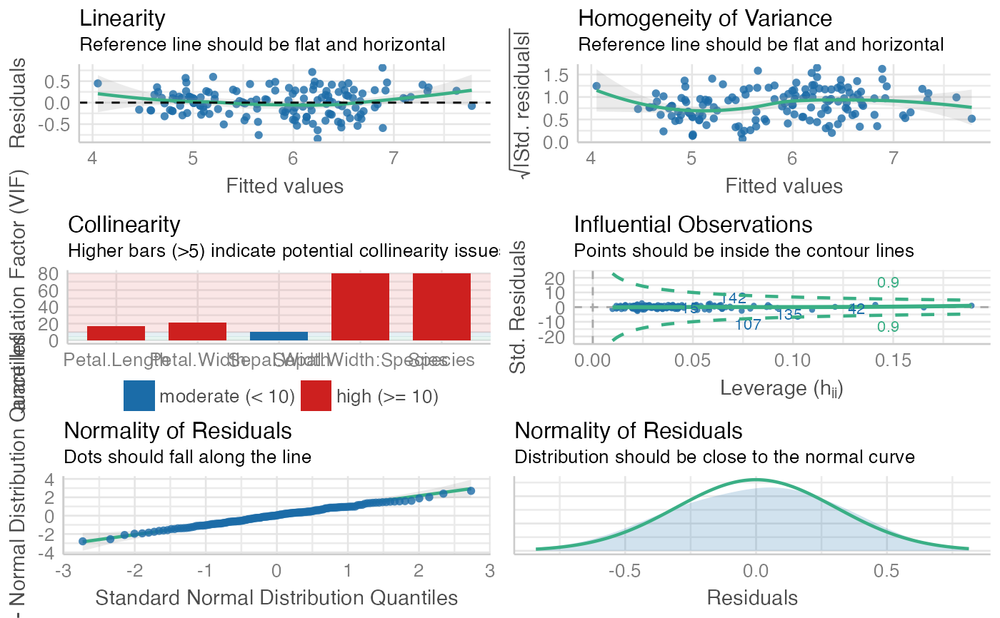
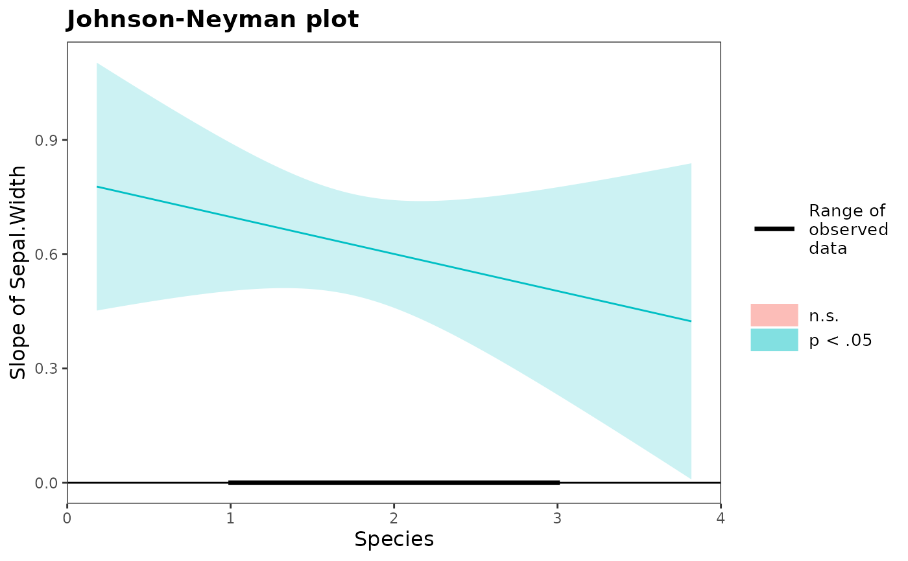
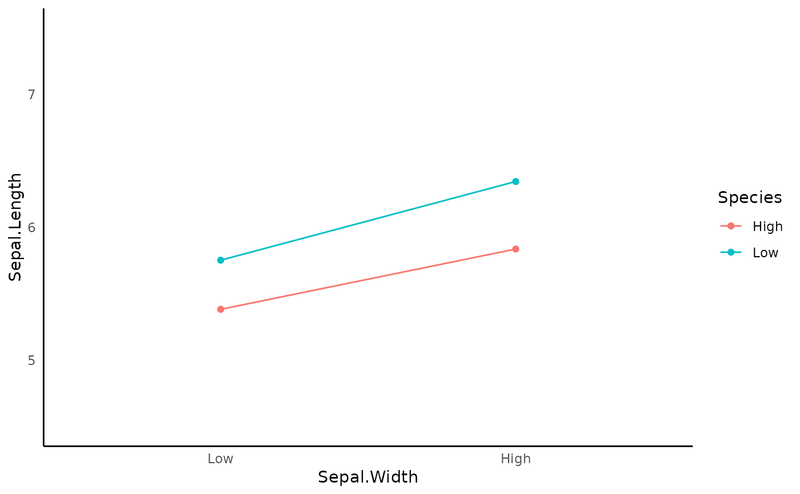

Integrated Function for Linear Regression
integrated_model_summary.Rd![[Stable]](figures/lifecycle-stable.svg)
It will first compute the linear regression. Then, it will graph the interaction using the two_way_interaction_plot or the three_way_interaction_plot function.
If you requested simple slope summary, it will calls the interaction::sim_slopes()
integrated_model_summary( data, response_variable = NULL, predictor_variable = NULL, two_way_interaction_factor = NULL, three_way_interaction_factor = NULL, family = NULL, cateogrical_var = NULL, graph_label_name = NULL, model_summary = TRUE, interaction_plot = TRUE, y_lim = NULL, plot_color = FALSE, digits = 3, simple_slope = FALSE, assumption_plot = FALSE, quite = FALSE, streamline = FALSE, return_result = FALSE )
Arguments
| data | data frame |
|---|---|
| response_variable | DV (i.e., outcome variable / response variable). Length of 1. Support |
| predictor_variable | IV. Support |
| two_way_interaction_factor | two-way interaction factors. You need to pass 2+ factor. Support |
| three_way_interaction_factor | three-way interaction factor. You need to pass exactly 3 factors. Specifying three-way interaction factors automatically included all two-way interactions, so please do not specify the two_way_interaction_factor argument. Support |
| family | a GLM family. It will passed to the family argument in glm. See |
| cateogrical_var | list. Specify the upper bound and lower bound directly instead of using ± 1 SD from the mean. Passed in the form of |
| graph_label_name | optional vector or function. vector of length 2 for two-way interaction graph. vector of length 3 for three-way interaction graph. Vector should be passed in the form of c(response_var, predict_var1, predict_var2, ...). Function should be passed as a switch function (see ?two_way_interaction_plot for an example) |
| model_summary | print model summary. Required to be |
| interaction_plot | generate the interaction plot. Default is |
| y_lim | the plot's upper and lower limit for the y-axis. Length of 2. Example: |
| plot_color | If it is set to |
| digits | number of digits to round to |
| simple_slope | Slope estimate at +1/-1 SD and the mean of the moderator. Uses |
| assumption_plot | Generate an panel of plots that check major assumptions. It is usually recommended to inspect model assumption violation visually. In the background, it calls |
| quite | suppress printing output |
| streamline | print streamlined output |
| return_result | If it is set to |
![[Experimental]](figures/lifecycle-experimental.svg)
Value
a list of all requested items in the order of model, model_summary, interaction_plot, simple_slope
Examples
fit <- integrated_model_summary( data = iris, response_variable = "Sepal.Length", predictor_variable = tidyselect::everything(), two_way_interaction_factor = c(Sepal.Width, Species) )#> Warning: The following columns are coerced into numeric: Species#> #> #> Model Summary #> Model Type = Linear regression #> Outcome = Sepal.Length #> Predictors = Sepal.Width, Petal.Length, Petal.Width, Species #> #> Model Estimates #> ─────────────────────────────────────────────────────────────────────────────────── #> Parameter Coefficient t df SE p 95% CI #> ─────────────────────────────────────────────────────────────────────────────────── #> (Intercept) 1.552 2.649 144 0.586 0.009 ** [ 0.394, 2.711] #> Sepal.Width 0.795 4.401 144 0.181 0.000 *** [ 0.438, 1.152] #> Petal.Length 0.750 12.662 144 0.059 0.000 *** [ 0.633, 0.867] #> Petal.Width -0.364 -2.370 144 0.154 0.019 * [-0.668, -0.060] #> Species 0.029 0.105 144 0.278 0.917 [-0.520, 0.578] #> Sepal.Width:Species -0.097 -1.013 144 0.096 0.313 [-0.287, 0.092] #> ─────────────────────────────────────────────────────────────────────────────────── #> #> Goodness of Fit #> ─────────────────────────────────────────────────── #> AIC BIC R² R²_adjusted RMSE σ #> ─────────────────────────────────────────────────── #> 83.729 104.803 0.863 0.858 0.305 0.312 #> ─────────────────────────────────────────────────── #> #> Model Assumption Check #> OK: Residuals appear to be independent and not autocorrelated (p = 0.954). #> OK: residuals appear as normally distributed (p = 0.949). #> Unable to check autocorrelation. Try changing na.action to na.omit. #> Warning: Heteroscedasticity (non-constant error variance) detected (p = 0.036). #>#> Warning: Model has interaction terms. VIFs might be inflated. You may check multicollinearity among predictors of a model without interaction terms.#> Warning: Severe multicolinearity detected (VIF > 10). Please inspect the following table to identify high correlation factors. #> Multicollinearity Table #> ──────────────────────────────────────── #> Term VIF SE_factor #> ──────────────────────────────────────── #> Sepal.Width 9.518 3.085 #> Petal.Length 16.785 4.097 #> Petal.Width 21.093 4.593 #> Species 79.480 8.915 #> Sepal.Width:Species 79.743 8.930 #> ──────────────────────────────────────── #># \donttest{ fit <- integrated_model_summary( data = iris, response_variable = "Sepal.Length", predictor_variable = tidyselect::everything(), two_way_interaction_factor = c(Sepal.Width, Species), simple_slope = TRUE, # you can request simple slope assumption_plot = TRUE, # you can also request assumption plot plot_color = TRUE # you can also request the plot in color )#> Warning: The following columns are coerced into numeric: Species#> #> #> Model Summary #> Model Type = Linear regression #> Outcome = Sepal.Length #> Predictors = Sepal.Width, Petal.Length, Petal.Width, Species #> #> Model Estimates #> ─────────────────────────────────────────────────────────────────────────────────── #> Parameter Coefficient t df SE p 95% CI #> ─────────────────────────────────────────────────────────────────────────────────── #> (Intercept) 1.552 2.649 144 0.586 0.009 ** [ 0.394, 2.711] #> Sepal.Width 0.795 4.401 144 0.181 0.000 *** [ 0.438, 1.152] #> Petal.Length 0.750 12.662 144 0.059 0.000 *** [ 0.633, 0.867] #> Petal.Width -0.364 -2.370 144 0.154 0.019 * [-0.668, -0.060] #> Species 0.029 0.105 144 0.278 0.917 [-0.520, 0.578] #> Sepal.Width:Species -0.097 -1.013 144 0.096 0.313 [-0.287, 0.092] #> ─────────────────────────────────────────────────────────────────────────────────── #> #> Goodness of Fit #> ─────────────────────────────────────────────────── #> AIC BIC R² R²_adjusted RMSE σ #> ─────────────────────────────────────────────────── #> 83.729 104.803 0.863 0.858 0.305 0.312 #> ─────────────────────────────────────────────────── #> #> Model Assumption Check #> OK: Residuals appear to be independent and not autocorrelated (p = 0.968). #> OK: residuals appear as normally distributed (p = 0.949). #> Unable to check autocorrelation. Try changing na.action to na.omit. #> Warning: Heteroscedasticity (non-constant error variance) detected (p = 0.036). #>#> Warning: Model has interaction terms. VIFs might be inflated. You may check multicollinearity among predictors of a model without interaction terms.#> Warning: Severe multicolinearity detected (VIF > 10). Please inspect the following table to identify high correlation factors. #> Multicollinearity Table #> ──────────────────────────────────────── #> Term VIF SE_factor #> ──────────────────────────────────────── #> Sepal.Width 9.518 3.085 #> Petal.Length 16.785 4.097 #> Petal.Width 21.093 4.593 #> Species 79.480 8.915 #> Sepal.Width:Species 79.743 8.930 #> ────────────────────────────────────────#>#>#> #> Slope Estimates at Each Level of Moderators #> ──────────────────────────────────────────────────────────────── #> Species Level Est. S.E. t val. p 95% CI #> ──────────────────────────────────────────────────────────────── #> Low 0.680 0.087 7.864 0.000 *** [0.509, 0.851] #> Mean 0.601 0.072 8.392 0.000 *** [0.459, 0.742] #> High 0.521 0.123 4.236 0.000 *** [0.278, 0.764] #> ──────────────────────────────────────────────────────────────── #> Note: For continuous variable, low and high represent -1 and +1 SD from the mean, respectively.#> Warning: You requested > 2 plots. Since 1 plot can be displayed at a time, considering using Rmd for better viewing experience.# }